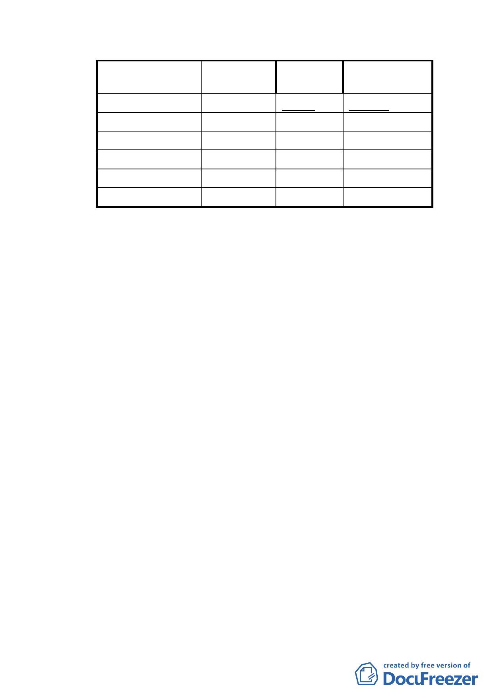

項目
機關用地
公園用地
道路用地
排水溝用地
保護區
合計
變更後面積 百分比
(公頃） (％)
1.196
30.15
0.263
6.63
0.191
4.82
0.099
2.50
1.362
34.34
3.966
100
較公展計畫
增減面積
-0.286
0
0
-0.053
0
六、 案經本會101年6月28日第636次委員會議決議：「本案防洪調
節池投資金額龐大，且基地位辛亥捷運站附近，土地資源珍
貴，市府的規劃應該得到更多民眾認同與支持；請市府水利
處針對防洪設施規劃究係以防災公園形式或防洪調節池形
式、設計工法採透水式或不透水水泥池、以及本區總合治水
對策規劃之成效等議題進一步研究，將研究結果向地方居民
說明、溝通並蒐集民眾意見後，再提會討論。」
七、 全案係市府97年7月10日公展並以府都規字第09732907403
號函送到會，101年12月6日、101年12月25日以北市都規字
第10138791000號、府授都字第10139692900號函送補充說明
資料，提會審議。
八、 市府本次提會所送補充說明如下：
（一） 本案經本府水利處召開說明會溝通後，出席民眾皆表示
支持防洪調節池規劃案。
（二） 有關土地所有權人要求將保護區土地變更為公園用地一
併徵收之訴求，業經本府評估公園開闢之財務及效益不
可行。
（三） 考量本案變更防洪調節池有其急迫性及必要性，敬請
貴會支持本府所提方案內容。
（四） 至有關部分公民或團體所提擴大規劃為親水防洪公園之
陳情意見，因本案計畫範圍內變更為機關用地及計畫範
- 11 -